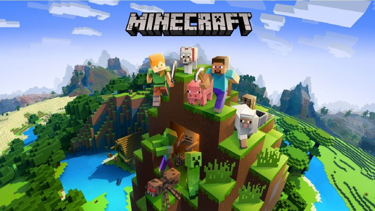
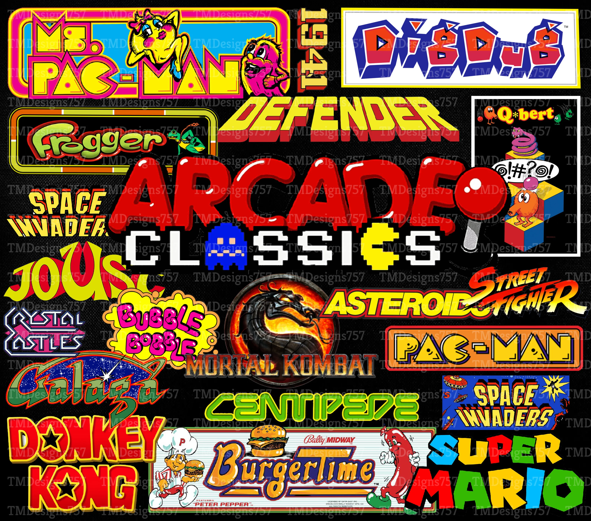

¡Bienvenido/a a nuestra página web sobre videojuegos!
En esta plataforma encontrarás todo lo relacionado con el increíble mundo gamer: su historia, sus diferentes géneros, el impacto que han tenido en la sociedad, curiosidades, y mucho más. Este espacio está pensado tanto para jugadores experimentados como para aquellos que recién comienzan a explorar este apasionante universo.

Los videojuegos han pasado de ser simples pasatiempos a convertirse en verdaderas obras de arte, con historias complejas, gráficos impresionantes y comunidades activas alrededor del mundo. No solo entretienen, sino que también educan, conectan personas y fomentan habilidades como la coordinación, la estrategia, la creatividad y el trabajo en equipo.
Nuestro objetivo es brindarte información clara, interesante y organizada para que puedas aprender y disfrutar mientras navegas por nuestras secciones. Cada parte de esta página ha sido diseñada con entusiasmo y dedicación para mostrar todo lo que los videojuegos representan hoy en día: una mezcla de tecnología, cultura, entretenimiento y evolución constante.

Ya seas fan de los juegos retro, de los títulos modernos, o simplemente tengas curiosidad por saber más, estás en el lugar indicado. Esperamos que disfrutes tu visita y que esta web sea el inicio de un gran viaje digital.
¡Gracias por acompañarnos, y que comience la aventura gamer! 🎮🚀